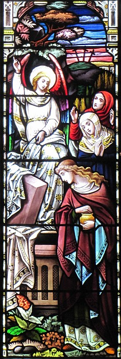
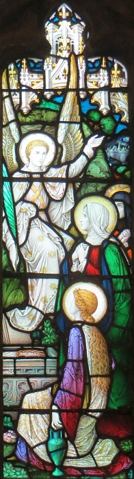

La Bouonne Nouvelle s'lon Luc, Chapitre 24
Vèrsets 1-12

Mais chu preunmié jour d'la s'maine, à sinne dé jeu, i' vîntent à la sépultuthe, apportant l's êpices tch'il' avaient grées.
Et i' r'mèrtchîtent qu'la pièrre avait 'té boulée d'côté et il' entrîtent, mais l'corps du Seigneu Jésû n'tait d'aut' là.
Et coumme i' pozzlaient, i' vîtent deux hoummes là en habits lithants
Et quand i' lus abaîssîtent dans l'aithe l'avant à ieux, ches'-chîn lus dîtent:
"Pouortchi qu'ou chèrchiz l'vivant siez les morts?
I' n'est pon ichîn, i' r'vit; souv'n'-ous d'chein qu'i' vos dit quand i' 'tait acouo en Galilée:
Lé Fis d'l'houmme es'sa donné ès malfaîteurs, et crucifié, et l'traîsième jour i' r'viv'tha."
Et i' lus souvîntent dé ses patholes,
Et i' lus en fûtent d'ilo et racontîtent tout chennechîn ès onze discipl'yes et à touos l's aut's.
Car y'avait Mathie Magdalène, et Janne et Mathie, la méthe à Jacques; et l's aut's femmes acanté ieux dîtent chennechîn ès apôtres.
Mais ieux i' criyaient qu'ch'tait raique du niolîn et i' lus en mêfiaient.
Mais Pièrre s'butit et i' s'en fut à la sépultuthe et i' r'gardit d'dans mais i' n'viyait raique les lîncheurs, et i' rallit siez li tout êmèrvilyi par chein tch'avait prîns pliaiche.
Vèrsets 1-10
Tout coumme à l'assinne au tout c'menchement d'la s'maine, ches femmes-chîn apportîdrent à la sépultuthe les êpices qu'il' avaient grée. I' trouvîdrent la pièrre emboulée d'la goule d'la sépultuthe, mais quand il' y'entrîdrent, i' n'y trouvîdrent pon d'corps. Quandi qu'i' restaient avaû-ieux, v'là tchi geuthîdrent au ras dg'ieux deux hardgieaux en habits êgaluants. Les femmes fûdrent êffrédolées et lus prostèrnîdrent mais les hardgieaux lus dîdrent, "Pouortchi qu'ous êtes vénues qu'si l'vivant siez les morts? I' n'est pon par ichîn, ch'est en tchi il est souôl'vé. Vos souv'n'-ous qué quandi qu'i' 'tait acouo en Galilée, i' vos dit qu'lé Fis d'L'Houmme éthait à êt' bailli ès pécheurs et clioué à la crouaix et r'souôl'vé l'traîsième jour?"
Là-d'ssus i' lus souvîndrent dé ches patholes à li et rentrîdrent d'la sépultuthe et racontîdrent tout chennechîn à l'onzaine et ès aut's. Ch'est en tchi les cheinnes tchi racontîdrent chennechîn ès approtis 'taient Mathie Mad'laine, Jeanneton, Mathie la méthe à Jînmîn et l's aut's femmes d'lus compangnie.
Vèrsets 1-12
Chu preunmié jour d'la s'maine à sinne dé jeu, les femmes vîndrent à la tombe en apportant l's êpices qu'il' avaient grées (et y'en avait d'aut's acanté ieux). Et i' trouvîdrent qu'la pièrre à la brècque d'la tombe avait 'té emboulée. Il' entrîdrent mais l'corps du Seigneu Jésû n'tait nément là-d'dans. Il' en 'taient toutes morfondues, épis d'un co né v'là deux hoummes mâtés là l'tou en habits lithants. Les femmes fûdrent êffritées et lus fliantchîdrent dans l'aithe. L's hoummes dîdrent, "Pouortchi qu'ous êtes à chèrchi pouor l'vivant siez les morts? I' n'est pon ichîn, li il est souôl'vé! N'en souv'n'-ous pon, dé chein qu'i' vos dit en Galilée, qué l'Fis d'l'Houmme étha à êt' bailli entre les mains des pécheurs pouor êt' clioué à la crouaix et pouor êt' souôl'vé l'traîsième jour?"

"Si-fait," qu'i' dîdrent, "né v'là chein qu'i' nos dit tchi s'adonn'nait."
I' r'vîndrent don d'la tombe et dîdrent ès onze approtis tout chein tchi s'est adonné, et i' dîdrent dé même ès aut's étout. Ch'fut Mathie Mad'leine et Jeanneton, et Mathie la méthe à Dgémîn, et d'aut's femmes tchi 'taient acanté ieux, tchi dîdrent ches choses-chîn ès apôtres. Mais i' n'les crûdrent pon, criyant qu'i' niolinnaient. Épis l'Rotchi sé d'butit et couothit à la tombe et s'baîssit et êpyit par-dédans. I' vit les lîncheurs êtrav'lées d'un bord et i' s'en r'fut en sé d'mandant pouor chein tchi s'est adonné.
Vèrsets 13-24
Épis chu jour-là y'en avait deux dg'ieux tch'allaient à eune pétite ville tch'avait nom Emmaüs tchi 'tait à dans les sept milles d'Jéthusalem. Et il' en dêclianqu'taient entouor tout chein tchi s'tait adonné. Et tandi qu'i' marchaient et lus entré-tchestchionnaient, Jésû vînt, lî, en marchant acanté ieux. Mais i' 'taient embliûtrés et n'l'èrconnaîssaient pon. Et i' lus dit, "Entouor tch'est qu'ou bagoulez sus vot' quémîn? Et pouortchi qu'ous êtes si attristrés?"
Lé chein tch'avait nom Cléopas lî dit, "Es-tu don l'seul dé tout Jéthusalem tchi n'a pon ouï pâler entouor chein tchi s'est adonné à ches drein?"
Et i' lus dit, "Entouor tchi?"
Et i' dîdrent "Entouor Jésû l'Nazarétchien, un prophète dé grands faits et d'grandes patholes l'avant au Bouôn Dgieu et à tout l'peupl'ye; épis coumme tchi qu'les grands prêtres et les grôsses têtes l'avaient condamné à mort et l'avaient crucifié. Mais j'têmes à espéther, nous, qué ché s'sait li l'Saûveux d'Israël. Acouo ch'est en tchi il a laîssi pâsser trais jours du temps quand tchi qu'tout chennechîn s'est adonné; épis tchiques femmes d'entré nous nos ont êmèrvilyis, car i' lus en fûdrent tôt l'matîn à sa tombe et san corps n'tait d'aut' là-d'dans, et i' r'vîndrent nos dithe qu'il' avaient veu géthi des m'sagièrs tchi dîdrent qu'il est vivant. Et tchiqu's'uns d'entré nous lus en fûdrent là-bas, et vîdrent qué ch'tait coumme les femmes avaient dit, mais li, i' n'l'ont pon veu."
Vèrsets 25-35
Et i' lus dit, "Achocres! Lourdinn'-ous à craithe chein qu'les prophètes ont dit! Ché n'tait-i' pon d'mêtchi qu'lé Christ suffâque tout chenna à seule fîn d'aveindre dans sa glouaithe?" Et il lus explyitchit tout chein dans l's Êcrituthes, dé Moïse et d'touos les prophètes, tch'avait à faithe auve li. Et i' lus appréchîdrent d'la ville iou qu'il' allaient, et i' 'tait pouor aller pus liain, mais i' l'èrtèrgeaient en dîthant, "N't'en va pon! Vai-tu, la séthée s'fait et la journée est quâsiment ag'vée." Et il entrit acanté ieux. Et quand i' 'tait attablié auve ieux, i' prînt l'pain, fit eune action d'grâce, et lus en baillit des couêpîns. Et lus ièrs fûdrent êcalés et i' l'èrconnûdrent, mais i' dispathut l'avant à lus ièrs. I' lus entré-dîdrent don, "Jé n'têmes-t-i' pon touchis au tchoeu coumme i' nos pâlait sus l'quémîn et nos explyitchait les saintes Êcrituthes?"
Et en l'heu même i' lus dêhalîdrent et lus en r'fûdrent à Jéthusalem, où'est qu'les onze et l's aut's lus 'taient rassembliés. Et i' lus dîdrent, "Lé Seigneu est souôl'vé, véthe, et Simon l'a veu!" Et i' racontîdrent chein tchi s'adonnit sus l'quémîn et coumme tchi qu'i' l'èrconnûdrent quand i' lus baillit du pain.
Vèrsets 44-53
Épis i' lus dit, "Né v'chîn chein qué j'vos dis quand j'tais acouo entré vous: qué tout chein tch'avait 'té êcrit entouor mé dans la Louai d'Moïse, les Prophètes et les Sieaumes dait s'adonner." Épis i' lus avîsit pouor comprendre les Êcrituthes, en lus dithant, "Ch'est êcrit qué l'Onguenné dait souffri, et dait êt' souôl'vé des morts l'traîsième jour, et qu'l'èrpentance et l'pardon des péchés sont à êt' procliâmés dans san nom à toutes les nâtions, à c'menchi d'Jéthusalem. Ous êtes les têmouains d'ches choses-chîn. Et viy'-ous, j'envyie sus vous chein qu'lé Péthe a promîns; restez don ichîn en ville entréchîn qu'ou s'sêtes habilyis d'pouvé d'en haut."
Et Jésû les m'nit hors l'travèrs d'Béthannie et là il aveingnit ses mains et les bénit. Et i' s'adonnit qué quandi qu'i' les bénissait, i' les laîssit et fut amonté au ciel. I' l'louangîdrent et rentrîdrent à Jéthusalem hardi rêjouis. Et i' pâssîdrent lus temps à louangi et béni dans la Maîson du Bouôn Dgieu.
Viyiz étout:
- La Bibl'ye
- La Bouonne Nouvelle s'lon Saint Luc, chapitre iun, vèrsets 1-4
- La Bouonne Nouvelle s'lon Luc, Chapitre 1, vèrsets v-xxv
- L'Êvangile sélon Saint Luc, chapitre iun, vèrsets 26-38
- L'Êvangile sélon St.-Luc: chapitre 1 versêts xxvi à xxxviii - eune aut' vèrsion
- L'Êvangile sélon Saint Luc, chapitre iun, vèrsets 26-38 - eune aut' vèrsion
- La Bouonne Nouvelle s'lon Luc, Chapitre 1, vèrsets 39-56
- L'Êvangile sélon St.-Luc: chapitre 2 versêts i à vii
- L'Êvangile sélon St.-Luc, Chapitre deux, Vèrsets 1 à 7- eune aut' vèrsion
- L'Êvangile sélon Saint Luc, chapitre 2, vèrsets viii à xx
- L'Êvangile sélon St.-Luc, Chapitre deux, Vèrsets 8 à 20- eune aut' vèrsion
- L'Êvangile sélon St.-Luc: chapitre 2, versêts viii à xx - eune aut' vèrsion
- L'Êvangile sélon St.-Luc: Chapitre 2, Versêts 8 à 20 - eune aut' vèrsion
- La Bouonne Nouvelle s'lon Luc Chapitre 2, Vèrsets 21-24
- La Bouonne Nouvelle s'lon Luc, Chapitre 2, vèrsets 25-33
- La Bouonne Nouvelle s'lon Luc: 3
- La Bouonne Nouvelle s'lon Luc, Chapitre 3, vèrsets 23 à 38
- La Bouonne Nouvelle s'lon Luc: 4
- La Bouonne Nouvelle s'lon Luc, Chapitre 8
- La Bouonne Nouvelle s'lon Luc: 9
- La Bouonne Nouvelle s'lon Luc: 10
- Lé Bouôn Samathitain
- La Bouonne Nouvelle s'lon Luc: 12
- La Bouonne Nouvelle s'lon Luc: 13
- Luc: 14
- La Bouonne Nouvelle s'lon Luc, 15 iii-vi
- La Bouonne Nouvelle s'lon Luc, Chapitre 15, vèrsets viii-x
- L'Êfant Prodigue
- La Bouonne Nouvelle s'lon Luc: 17
- La Bouonne Nouvelle s'lon Luc: 18
- La Bouonne Nouvelle s'lon Luc, Chapitre 19
- La Bouonne Nouvelle s'lon Luc, chapitre 19, vêrsets 1-10
- L'Êvangile sélon Saint Luc, chapitre 19, vèrsets 42-44
- La Bouonne Nouvelle s'lon Luc: 20
- La Bouonne Nouvelle s'lon Luc, Chapitre 20, vèrsets 20-26
- La Bouonne Nouvelle s'lon Luc, Chapitre 21
- La Bouonne Nouvelle s'lon Luc: 22
- La Bouonne Nouvelle s'lon Luc, Chapitre 23
- La Bouonne Nouvelle s'lon Saint Luc, chapitre 24, vèrsets 36-43